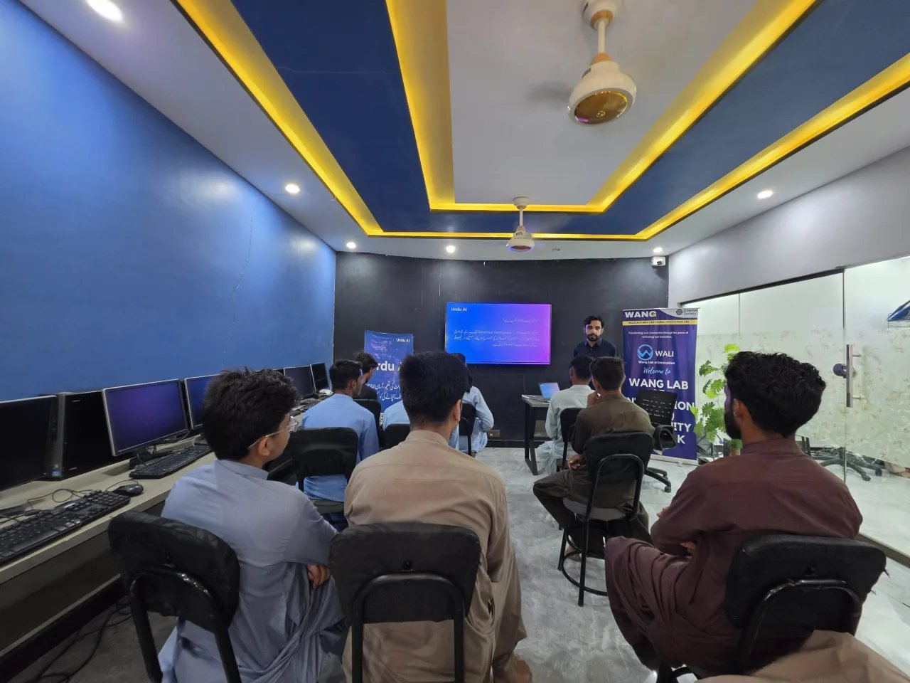

Answer first: The official World Youth Skills Day 2026 theme was Skills for a Shared Future. For WANG, that theme is not abstract. It describes the daily work of preparing young people in Balochistan with practical skills for AI, digital access, climate resilience, women's enterprise, communication, problem-solving, and community leadership.
World Youth Skills Day is observed every year on July 15. The 2026 theme recognizes that young people need more than one type of training. Technical knowledge matters, but so do digital confidence, AI literacy, green skills, civic participation, teamwork, critical thinking, and the human qualities that technology cannot replace.
That is the same belief behind WANG's model. A young person in Lasbela does not only need a computer class. A girl joining a training session does not only need a certificate. A community facing climate shocks does not only need awareness. They need a connected pathway: access, confidence, language, mentorship, practice, and a real reason to use what they learn.
What "Skills for a Shared Future" means for WANG
At WANG, skills are not treated as a narrow employment checklist. They are part of community resilience. Through WALI structured learning, youth get exposure to computers, digital tools, AI workshops, and guided practice. Through Urdu AI, learners can explore artificial intelligence in Urdu, without a language barrier becoming a gatekeeper. Through women and girls' programs, skills become safer participation, confidence, and future income pathways.
The phrase "shared future" matters in rural Pakistan because the future is not shared automatically. If AI education stays English-only, if digital tools require expensive devices, if girls cannot attend safe learning spaces, and if climate-affected communities are left out of training systems, the future becomes divided before it begins.

AI and digital skills in local language
Artificial intelligence is changing how people learn, search, write, work, design, and solve problems. But for many young people in underserved communities, the first barrier is not curiosity. It is access: language, internet, devices, confidence, and someone nearby who can explain the tool without making the learner feel excluded.
This is where WANG's work through WALI and Urdu AI becomes directly linked to World Youth Skills Day. Urdu AI brings AI learning into a language people already think in. WALI brings that learning into a physical community space. Together, they turn a global technology conversation into something a student, teacher, young worker, or mother in Balochistan can actually use.
Digital literacy is the first layer: typing, searching, using documents, understanding online information, and staying safe. AI literacy is the next layer: asking better questions, checking answers, using tools ethically, creating useful content, and understanding where human judgment still matters. Both are needed for the future of work.

Women and girls must be part of the skills future
A shared future cannot be built while half the community is treated as an afterthought. WANG's work with women and girls connects digital skills with participation, safety, confidence, and livelihood. This includes AI learning sessions, girls' leadership spaces, mother-daughter models, and WIRE's women-led enterprise pathways.
For many rural women, skills are not only about formal employment. They can mean using a phone more confidently, understanding online information, improving household enterprise, documenting work, accessing services, supporting children's learning, or participating in a community decision with more confidence. These are real skills, and they compound across families.

Skills also mean climate resilience and livelihoods
The future young people face is shaped by more than technology. Climate shocks, uncertain livelihoods, migration pressure, and unequal access to services all affect whether youth can use their potential. That is why WANG links skills with climate resilience, education continuity, women's enterprise, and community-led problem solving.
Green skills are not only for formal green jobs. In a district like Lasbela, they include understanding local climate risks, adapting livelihoods, using solar-backed infrastructure, supporting flood recovery, improving community preparedness, and connecting rural innovation with practical needs. A future-ready youth strategy must speak to these realities.
From learning sessions to local leadership
The strongest skills programs do not end at attendance. They build confidence, repetition, peer learning, and local ownership. WANG's model grows from community trust: WALI provides a learning hub, Urdu AI provides accessible AI education, WIRE and ADI strengthen women and girls' pathways, and the Urdu AI Dost network carries learning into more communities.
That is why World Youth Skills Day is more than a date on the calendar for WANG. It is a reminder that young people in rural Balochistan are not waiting to be included in the future. They are already building it through local language learning, digital confidence, climate awareness, women-led enterprise, and the courage to keep learning.

WANG's commitment after World Youth Skills Day
WANG will continue investing in the skills that make young people adaptable, employable, creative, and useful to their communities. That means digital skills, AI literacy, communication, ethical judgment, climate resilience, women-led enterprise, and practical problem-solving.
The 2026 theme, Skills for a Shared Future, gives language to work WANG has already been doing from Lasbela: making sure the future is not only for those with the fastest internet, the strongest English, or the easiest access to opportunity. A shared future has to be built deliberately. WANG is building it with young people, women, girls, teachers, facilitators, and communities.
Frequently asked questions
What was the World Youth Skills Day 2026 theme?
The World Youth Skills Day 2026 theme was Skills for a Shared Future. The theme focused on future-ready skills, including technical, digital, AI, green, social-emotional, civic, communication, and critical-thinking skills.
How does WANG connect to the theme?
WANG connects to the theme through WALI digital literacy and AI workshops, Urdu AI learning in Urdu, women and girls' leadership programs, WIRE enterprise work, climate resilience training, and youth pathways in Balochistan.
Why is local-language AI learning important?
Local-language AI learning matters because language can decide who participates. Urdu AI helps learners understand AI concepts, ask better questions, and use tools practically in a language they can access.